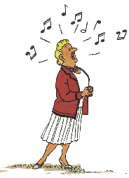

.png)

BIANCA CASTAFIORE

Bianca Castafiore es una celebérrima cantante de ópera de la "Scala" de Milán también conocida a esta grandissima artista como "El ruiseñor milanés", ha dado conciertos por todo el mundo, contándose sus actuaciones por clamorosos éxitos. Rossini, Puccini, Verdi, son compositores que la soprano interpreta con frecuencia. Pero, sin duda, la obra con la cual la diva ha cosechado los mayores triunfos es la ópera "Fausto" de Gounod, y dentro de ella su inigualable interpretación del "Aria de las Joyas", aria en la que la Castafiore saca a relucir todas sus dotes, todo su talento, todo su arte, para hacer "vibrar" a un público entusiasta que se entrega hasta el delirio... Aunque bien es verdad que sobre gustos no hay nada escrito, y no es ésa precisamente la opinión que tiene alguien que la conoce muy de cerca -léase capitán Archibaldo Haddock-, para quien el nombre de Castafiore es sinónimo de cataclismo, catástrofe o calamidad.
Bianca Castafiore es la única personaje femenina importante en los cómics de Tintín, con el que se cruzó un montón de golpes durante sus aventuras. Tintín y Bianca Castafiore se conocieron en Syldavia en "El cetro de Ottokar", el mismo día en que la cantante actuaba en el "Gran Kursaal" de Klow. Tiempo después volvieron a encontrarse, esta vez en el teatro "Music-Hall Palace" en "Las 7 bolas de cristal", donde estaba cantando la soprano. Y luego, en Borduria, fue Bianca Castafiore la que sacó a Tintín y al capitán Archibaldo Haddock de un serio aprieto cuando, asediados por la policía en el teatro de Szohöd, los ocultó en su camerino en "El asunto Tornasol". Posteriormente, al naufragar en el mar Rojo y ser recogidos por el barco de pasajeros "Shéhérazade", allí estaba también la Castafiore para dar la bienvenida en nombre del marqués de Gorgonzola a Tintín y a su carissimo "capitán Archibaldo Haddock" en "Stock de coque". Pero la más inusitada de las historias donde tuvo más protagonismo, sucedió cuando, sin cumplidos, la Castafiore se invitó ella misma, a su camarera Irma y a su pianista Igor Wagner al castillo de Moulinsart durante una temporada. Con sus casi cien kilos, su importante voz, su delicadeza aciclonada, sus modelitos cursis y su aparatosa quincallería, esta diva destaca por su poca modestia y su temperamento histérico, trastornó la pacifica vida de Moulinsart. Eso sin contar el supuesto inminente matrimonio entre la diva y el marino, sacado a la luz pública por la revista "París-Flash" con el beneplácito de la cantante; o el embarazoso reportaje de televisión; o el impertinente loro multicolor que le regaló al capitán; o a las continuas desapariciones y reapariciones de sus joyas en Las joyas de la Castafiore... Pero no acaban aquí las aventuras de esta dama, ya que recientemente fue detenida por la autoridades de San Theodoros acusada de conspirar contra el general Tapioca y la encarcelaron. menos mal que al final el general Alcázar, con la ayuda de Tintín, el capitán Archibaldo Haddock y el profesor Silvestre Tornasol, pudo retomar el poder, deshizo los entuertos y la Castafiore fue liberada con gran júbilo en Tintín y los "picaros".